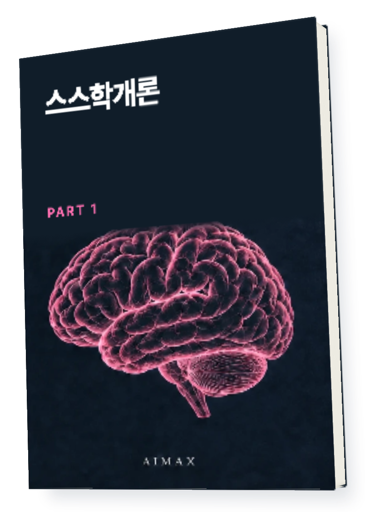
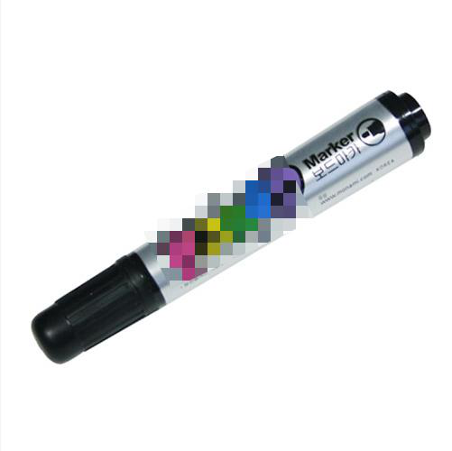
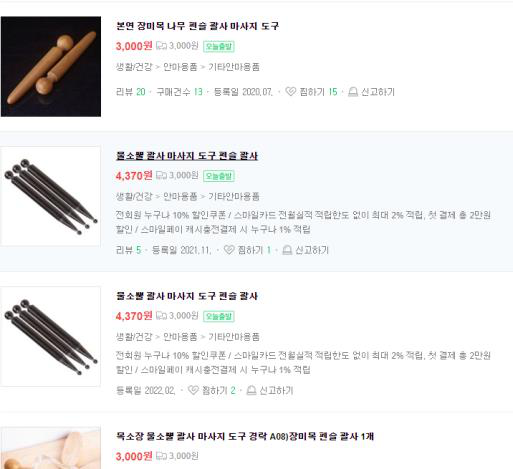
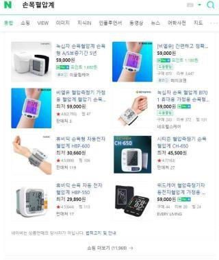
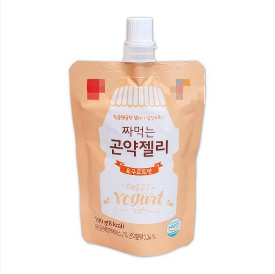
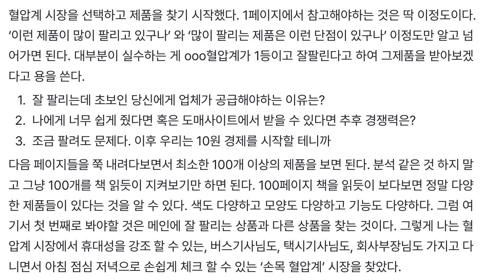

PRODUCT PLANNING · PART 1
남들이 잘 파는 상품,
나도 팔면 잘 팔릴까요?
나도 팔면 잘 팔릴까요?
팔리는 제품
찾는 비법서
제품의 생김새부터 고객이 느낄 가치까지.
상품 기획의 출발점을 바꾸는 책.

스스학개론 PART 1
AIMAX · 메이크패밀리 운영사
직접 팔아온 경험을
실전의 기준으로
메이크프렌즈 누적 매출
114.9억원
2021.01 — 2024.04
(주)메이크프렌즈 전체 매출 · 월별 원장 40개월 합산
각 막대는 2021년 1월부터 해당 시점까지의 누적액
제품 vs 가치
보이는 물건은 같아도
쓰는 이유는 다릅니다


책은 익숙한 물건을 다른 쓰임으로 보는
제품과 가치의 차이에서 출발합니다.
신기한 제품을 찾자
고객이 살 이유를
먼저 찾자
먼저 찾자
무엇부터 봐야 할지 막막하다면
🔎상품 목록을
관찰 노트로 바꾸세요
인기 상품과 그 단점을 함께 적으면
내가 바꿀 수 있는 부분이 보이기 시작합니다.
01 · 카테고리 관찰
1등 상품 옆에서
내 틈을 찾는 법
● ● ● BOOK PREVIEW

책 속 카테고리 탐색 화면
카테고리 관찰 메모
- 많이 팔리는 제품
- 어떤 모양과 기능이 반복되나요?
- 고객이 불편해하는 점
- 어떤 단점이 보이나요?
- 다른 후보
- 메인 상품과 다른 선택지는 무엇인가요?
02 · 판매 이유
💡같은 제품이라면
장점 하나를 더 선명하게
조금 더 싸게 팔면 되겠지
이 고객에게는
왜 더 좋을까?
왜 더 좋을까?
고객과 상황을 붙여 보세요
제품 이름 옆에 누가 언제 사용할지 적어 봅니다.
그 사람이 중요하게 여길 장점을 한 문장으로 좁혀요.

사례를 읽고 내 제품에도 질문해 보세요.
기능을 나열하는 문장과
고객이 원하는 가치를 설명하는 문장은
어떻게 달라질까요?
03 · 아이템 발상
내 경험에서
상품 후보를 찾으세요
🧩다른 기능기존 시장에서 찾기
↔️다른 대안선택지를 바꾸기
🙋내 경험겪어 본 문제에서
🔍고객의 불편필요한 이유 찾기
본문의 여섯 가지 발상 관점을 읽으며
기획 후보를 직접 적어 보세요.

AIMAX · 메이크패밀리

윤동규
이 책 지은이
메이크패밀리 대표
메이크패밀리 대표
사업도, 배움의 공간도
직접 운영하고 있습니다
메이크패밀리 네이버 카페
12,127명

2026.09.10 카페정보 화면 기준
출처: 네이버 카페 westudyssat
출처: 네이버 카페 westudyssat
메이크패밀리 라운지
2,885명

2026.09.10 라운지 공개 화면에 표시된 인원
출처: 메이크패밀리 라운지 첫 화면
출처: 메이크패밀리 라운지 첫 화면
읽고 나서 남길 것
1
상품 기획 후보누구에게 어떤 가치를 줄지 적은 한 문장
2
카테고리 관찰 메모인기 제품과 단점을 함께 정리한 기록
3
아이템 가설내 경험과 고객의 불편에서 출발한 후보
이런 분께 권합니다
뭘 팔지 정하지 못한 예비 판매자.
잘 팔리는 제품만 따라 고르던 분.
사입 전에 기획부터 점검하고 싶은 분.
구매 전에 확인하세요
지금 잘 팔리는 상품 목록인가요?
상품을 고르는 관점과 기획 방법을 다루는 책입니다. 현재 판매 순위나 수익을 보장하는 추천 목록은 아닙니다.
바로 작성할 양식도 들어 있나요?
관찰 메모와 기획 후보는 책의 방법을 적용해 직접 적는 결과물입니다. 별도 워크북 파일이 제공되는 구성은 아닙니다.
무엇을 받나요?
스스학개론 PART 1 PDF 전자책을 받습니다. 상품 소싱 대행이나 개별 컨설팅은 포함되지 않습니다.
지금 내 일에 적용해 보세요
팔릴 이유부터
생각해 보세요
30,000원
주문 이메일로 PDF를 받고
같은 이메일로 라운지에서 다시 꺼내보세요.
윤동규 지음. 사진과 화면은 본문에 수록된 사례입니다. 사례는 상품 기획 관점을 설명하며 매출이나 수익을 보장하지 않습니다. 본문에 수록된 외부 서비스와 링크는 변경될 수 있습니다.